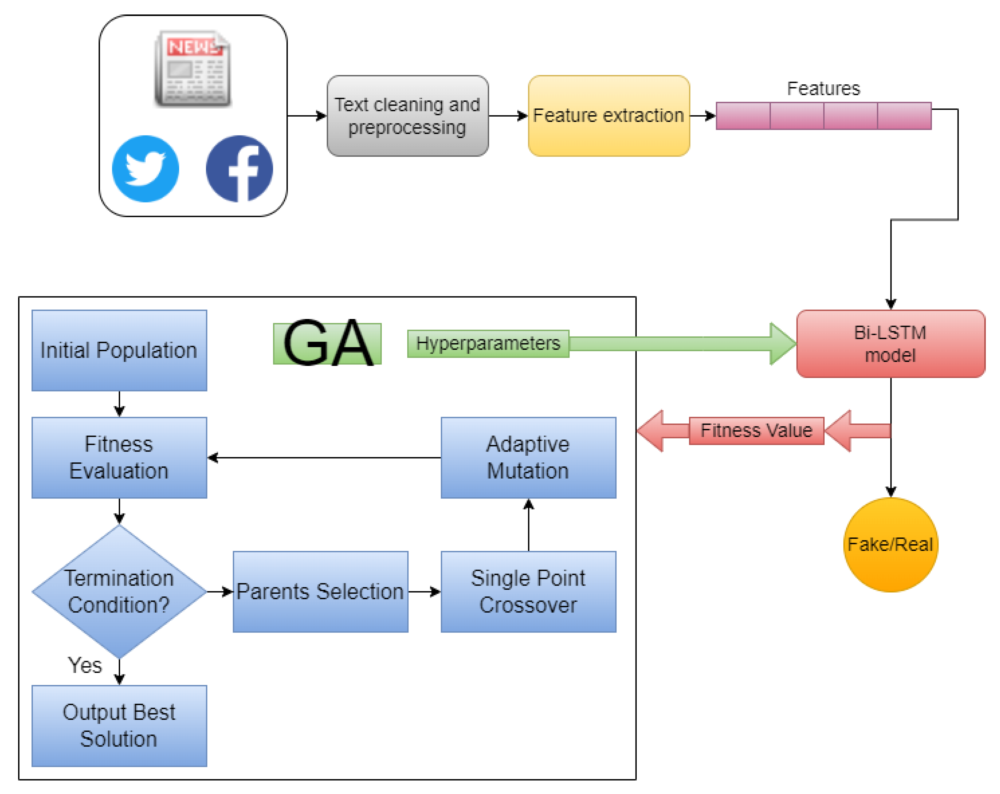

AWE USA 2026 (Augmented World Expo)
Role: Poster Presenter
The world's largest XR and spatial computing event.
Jun 2026
Long Beach, CA
Long Beach, CA

I am a Ph.D. student in Computer Engineering at Northeastern University, working in the Spatial Intelligence Research Group (SINRG) with Prof. Mallesham Dasari. My research is at the intersection of wearable computing and wireless sensing, with a broad interest in spatial intelligence: building systems that help everyday devices understand and interact with the physical world around them.
I enjoy working across the full stack, from hardware and embedded systems to wireless networking, signal processing, and machine learning. I am especially drawn to problems where careful systems design can make intelligent sensing practical on small, low-power devices, and to applications that have real impact on people.
Before my Ph.D., I earned a B.S. in Electrical & Computer Engineering from Norwich University (minors in Mathematics and Computer Science), where I was named Student Engineer of the Year and served as President of Eta Kappa Nu.
I am always open to new research collaborations. If our interests overlap, feel free to reach out at khalaf.m@northeastern.edu.
I build low-power wearable and wireless sensing systems for spatial intelligence. My focus areas:
